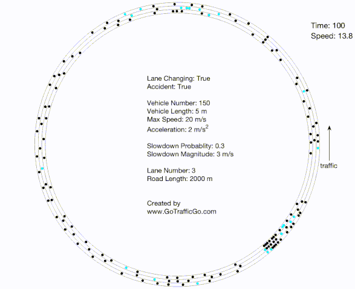

Traffic Flow Theory is a foundational course that focuses on traffic dynamics and the essential mathematical models and tools used to analyze and predict vehicle movement and traffic congestion on roadways. The course provides a solid understanding of key concepts such as vehicle trajectories, capacity drop, fundamental diagrams. It particularly covers important models and tools, including car-following models, lane-changing models, kinematic wave theory, and cumulative count curves. These concepts and tools form the foundation for various studies and applications in transportation engineering and traffic management. Download: https://github.com/gotrafficgo/traffic_flow_theory_slides
